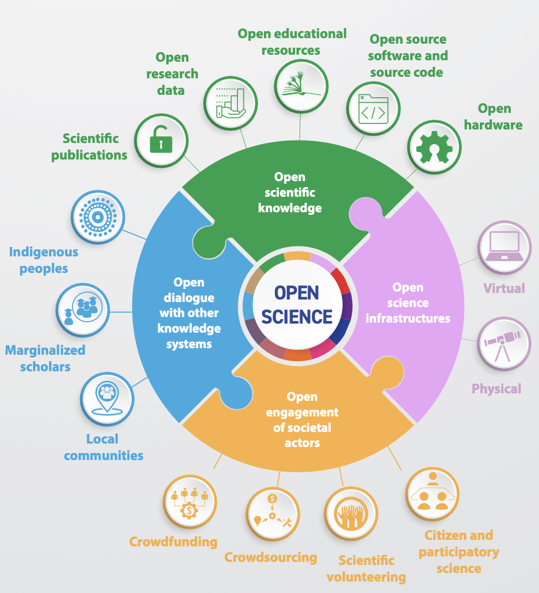
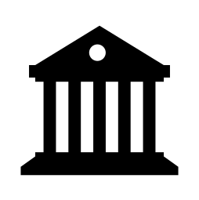
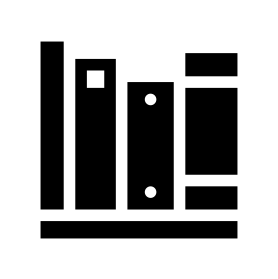
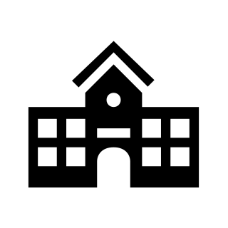
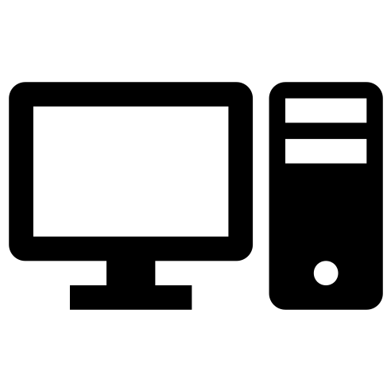
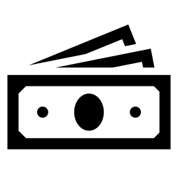
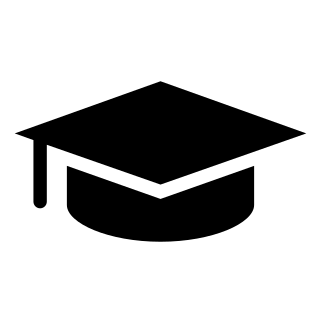
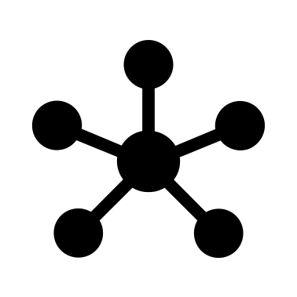
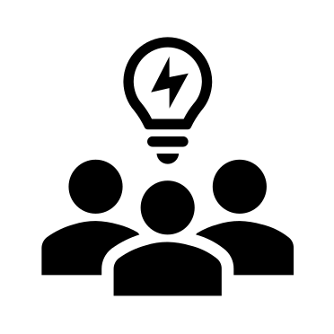

Assignment 2: OS in Sweden: what, why, how and who?
Purpose:
To develop an understanding of what Open Science entails and how responsibilities for its implementation are distributed among actors in the Swedish research system. The session also prepares participants to critically discuss and apply these concepts in practice, focusing on feasible actions for PhD students.
Learning outcomes:
Upon completion of this assignment, participants will be able to:
- Explain the main principles and pillars of Open Science and describe how they are operationalised within the Swedish research system.
- Analyse the distribution of responsibilities for Open Science implementation in Sweden, and determine where PhD students carry responsibility.
- Identify and evaluate concrete Open Science practices relevant to the participant’s research context.
Estimated duration:
3h
To-do:
Read the content below, and complete the group assignment.
Introduction
In Assignment 1, you examined how the Swedish academic system is organised, including which decisions are taken at the governmental level and which responsibilities rest with universities. You also discovered some foundational principles that embed elements of openness within the higher education and research system in Sweden by default.
In this assignment, we move from general structure to specifics and implementation of Open Science. We take a close look at Open Science: what it entails, why it is increasingly prioritized, how it is operationalised within the Swedish research system, and how responsibilities for implementation are distributed among different actors. Most importantly, you will reflect on what these expectations mean in practice for you as a PhD student.
To complete this assignment, read the content below and prepare the group-work task. The results will be presented and discussed during the in-person workshop at the DDLS Research School Retreat on March 19th.
Open Science: what is it?
Open Science is a broad transformation of how research is conducted, documented, shared, and evaluated. It challenges long-standing academic assumptions and practices about who can access knowledge, how research processes are documented, and how results circulate within (and beyond) academia.
What began as a grassroots movement advocating for openness, particularly around access to publications and data, has, over the past decades, evolved into a formal policy framework adopted by governments, research funders, and universities worldwide. Open Science is now embedded in research bills, funding requirements, institutional strategies, and infrastructure investments, also in Sweden.
In 2021, UNESCO adopted the first internationally agreed definition of Open Science in its Recommendation on Open Science (1). It defines Open Science as:
UNESCO’s definition highlights that Open Science is not just publishing open access articles, or making your research data openly available. Instead, it is a set of practices that weave through the entire research lifecycle: from planning, data collection and analysis, to publication, communication, long-term preservation, and even researcher evaluation.
Because Open Science touches so many dimensions of research practice, UNESCO structures it around four interconnected pillars. The figure below (copied from (2)) summarises these four pillars and the areas they encompass. A further explanation of each pillar is provided below the figure.

In summary: Open Science is an umbrella term that brings together multiple movements and reforms under a shared ambition: to reduce unnecessary barriers to knowledge.
At its core, Open Science is about shifting research from being closed by default to being open by design. Instead of publishing results behind paywalls, storing data on personal hard drives, or treating methods as implicit know-how, Open Science encourages you as a researcher to make your outputs and processes transparent, accessible, and reusable.
For you as a PhD student, this does not mean that everything must always be made public. Openness is not absolute. Ethical constraints, legal requirements, privacy considerations, intellectual property, and disciplinary norms all matter. The following guiding principle often used in Open Science captures this balance:
‘As open as possible, as closed as neccesary’
In practice, this principle means that openness is the default aspiration, but not at the expense of ethical responsibility, legal compliance, or research integrity. Transparency should be maximised wherever possible, but restrictions should be applied where they are genuinely justified.
Open Science: why should I care?
In the previous section, we have seen that Open Science is a shift toward research that is open by design. That may sound compelling in principle, and the logic behind it seems straightforward:
→ If research outputs are accessible, more people can read them.
→ If more people can read transparant research outputs, findings can be scrutinised and replicated.
→ If outputs can be scrutinised and replicated, duplication of effort may decrease and collaboration across institutions, disciplines, and even sectors may increase.
On paper, this logic is persuasive. In Sweden, the predicted benefits of Open Science are also framed as contributing to broader national objectives: strengthening research quality, improving the efficiency of public funding, increasing societal relevance, and maintaining international competitiveness. But does openness actually improve research practice? Why should you invest time and effort into making your work more transparent and accessible? What exactly are the promised benefits, and is there evidence that they really materialise?
To understand what Open Science can realistically deliver, and what it may cost you in terms of time, effort, and coordination, the table below summarizes common promised benefits, their practical advantages, and the main challenges you should be aware of. Where evidence to support an advantage exists, illustrative references are provided.
| Promise | Advantage | Challenge |
|---|---|---|
| More equitable use of public funding | Publicly funded research becomes accessible and beneficial to taxpayers, increasing societal value. | The financial and administrative costs of openness (for example, article processing charges (APCs)) often fall on you or your institution, which can create inequalities between well- and under-resourced environments. |
| More collaboration between researchers | Shared standards, interoperable formats, and open repositories make it easier to collaborate across labs, institutions, and countries (3). | High-quality sharing requires time, documentation, and infrastructure that may not always be available. |
| More efficient development of methods and innovation | When methods, code, and data are shared, you and others can build on existing work, accelerating methodological progress and supporting more ambitious research (4). | Sharing work early can feel risky, especially in competitive fields where concerns about being scooped or insufficiently credited are common. |
| Improved reproducibility and reduced publication bias | Open data, pre-registration, and transparent methods make your findings easier to reproduce and validate, thereby reducing publication bias & replication crisis (5, 6, 7) | Preparing reusable data and documentation requires substantial extra effort, and this work is not always formally rewarded in evaluations. |
| Faster dissemination of research | Preprints and open access publishing allow your findings to reach the community more quickly, enabling earlier feedback and visibility (8). | Rapid sharing without sufficient review may increase the circulation of preliminary or flawed results. |
| Increased citations and visibility | Open publications are generally more discoverable and, in many fields, associated with higher citation rates (3, 9, 10, 11). | Citation advantages vary by discipline, and open access fees can be costly if not covered by your institution or funder. |
| Greater public awareness and societal engagement | Open publications, data, and tools can inform policy, education, and public debate, increasing the societal reach of your research (3). | Research findings or data may be misunderstood, selectively used, or misinterpreted outside academic contexts. |
| Helps early-career researchers build visibility | Sharing your work openly can increase discoverability, expand your professional network, and support interdisciplinary connections. | You may be more exposed to unclear authorship norms or strategic behaviour by more senior colleagues. |
| Alignments with funder and institutional requirements | Many funders and universities now require Open Science practices; complying can strengthen grant competitiveness and institutional alignment. | Without adequate support structures, meeting these requirements can feel administratively burdensome and time-consuming. |
In short, Open Science can bring some real benefits for you as a PhD student: your work can get more visibility, reach the community faster, become easier to reproduce, and open up opportunities to collaborate with other researchers. That said, not all of these benefits are fully proven yet. Open Science is still a fairly recent movement, and monitoring mechanisms in Sweden and Europe and still being developed. It’s therefore hard to say for sure how much it actually improves research quality, impact, or societal relevance in every case.
Even if openness might benefit you, it will most likely also come with extra work. You might spend more time documenting your data properly, preregistering studies, managing repositories, or communicating your results to the public. These things take effort, and it’s not always clear how much they’ll pay off for your career, especially as a PhD student.
Because of the extra work involved in making your research as open as possible, it’s useful to know that Open Science isn’t something you do alone. Different actors share responsibility: researchers like you, your supervisors, your university, funders, and national infrastructures all have roles to play. In the next section, we’ll look at who does what in Sweden when it comes to Open Science, so you can see how the system is set up and what might realistically be expected from you.
Open Science: how and who?
In Sweden, as in much of Europe, Open Science grew out of frustration among researchers who faced paywalls, limited access to data, and untransparant research practices. Early progress was driven largely by university libraries, which played a key role in negotiating open access agreements, building institutional repositories, and supporting researchers with publishing and archiving. At the same time, national and international research infrastructure initiatives began focusing more seriously on research data management.
During the 2000s and 2010s, the conversation gradually broadened. What started as a push for open access to publications evolved into the wider concept of Open Science, including data, methods, and societal engagement. Over time, national coordination became more formalised, and Open Science moved from being mainly a grassroots initiative to becoming part of official policy.
Today, Open Science is embedded in national strategies, university policies, and funder requirements. Its implementation in Sweden involves coordinated action across researchers, supervisors, universities, funders, and national agencies. In other words, Open Science is a shared, system-wide effort in which different actors carry different responsibilities.
The figure below gives you an overview of the main actors involved in implementing Open Science in Sweden, from government and national agencies to universities and researchers.
The purpose is not just to show who is involved, but to help you see where responsibilities lie and where you can turn for support. Some expectations come from funders or national policy, while others are shaped by your university or research group. Understanding this structure can help you distinguish between what is required of you, what is decided above you, and what support systems are available to make Open Science manageable in practice.
Below the figure, each level is explained in more detail, with key responsibilities, actors, and guiding documents highlighted.


GovernmentAs you saw in Assignment 1, the Swedish government sets the overall direction for research and Open Science. This is done through research bills and national strategies. Through annual appropriation directives, the government also gives specific tasks to governmental agencies (e.g.the National Library of Sweden and the Swedish Research Council) related to Open Science. These agencies then translate political goals into more concrete actions and guidelines (see below).



Expert agenciesSeveral national organizations in Sweden help create the frameworks and tools that make Open Science manageable for you, so you don’t have to figure everything out on your own. Understanding their roles can help you know where to go for guidance and support.
- National Library of Sweden (NLS): The government has tasked NLS with coordinating Sweden’s work on open access to publications. They do this mainly through the Bibsam consortium, which negotiates agreements with publishers on behalf of all Swedish universities. Every year, KB publishes a report on its government assignment (see e.g. (12)), showing how many articles and books were openly published in Sweden and the costs of academic publishing. They also manage Publicera, the national digital platform for Swedish open-access journals, and SwePub, a national portal for research that has been published by researchers active in Sweden. In 2024, NLS published the National Guidelines for Open Science, which will be central for your group work in this assignment.
- Association of Swedish Higher Education Institutions (SUHF): SUHF is a collaboration body for Swedish universities. They developed the Roadmap for Open Science, which provides practical advice for universities on how to implement Open Science. Each year, SUHF also runs a survey to track how universities across Sweden are putting Open Science into practice (see e.g. (13)).
- Swedish National Data Service (SND): SND is a national research infrastructure that supports research data management, sharing, and long-term preservation. You can turn to them for guidance on creating data management plans, adding proper metadata, and publishing data according to FAIR principles. Tools like DORIS allow you to describe and publish your research data on the national portal Researchdata.se, making it findable and reusable by others.

FundersFunders play a key role in driving Open Science because they can require and reward open practices. In Sweden, several funders now explicitly encourage or reward Open Science practices in this way, so your grant applications are not just about the research itself, but also how openly and responsibly you plan to share your outputs. In general, funding requirements include things like:
- Publishing your work open access (see e.g. SRC requirements)
- FAIR data sharing (see e.g. SRC, and sharpened requirements in 2026)
- Data management plans (see e.g. SRC requirements)
- Highlighting Open Science contributions in funding applications (e.g. through narrative CVs or special sections in proposals, see e.g. Formas Career grant for ECRs and Formas Explore)
The Swedish Research Council (SRC) is the largest national research funder. SRC has a government mandate to coordinate work on open access to research data. Every year, they publish a report on progress (see e.g. (14)), and they provide guidance, examples, and templates for things like data management plans to help you comply with Open Science expectations.


Research organizationsYour university is where Open Science really becomes practical for you. It’s responsible for providing the support and tools that make open practices possible. This includes:
- Repositories for publications and research data
- Support from the library (publishing guidance) and data stewards (data management advice)
- Local Open Science policies and guidance
- Training in Open Science practices
On top of that, national research infrastructures provide advanced facilities and technologies across universities, including high-performance computing, sequencing, imaging, and other specialized research platforms.
SciLifeLab is one such infrastructure in life sciences. It offers platforms, training, and support for data-intensive research. For Open Science, SciLifeLab provides:
- the Data Stewardship Wizard for planning and managing data
- the SciLifeLab data repository to deposit datasets
- the SciLifeLab Data Platform for guidance and resources
- SciLifeLab Training Hub for courses and open educational resources

Researchers (including you)Open Science ultimately happens in everyday research practice. As a PhD student, this is where theory meets reality: you are the one putting policies and tools into action. This doesn’t mean you do it alone, but it does mean you have a role in implementing open practices. Some ways you might engage with Open Science include (but are not limited to):
- Open access publishing: choosing journals or platforms that make your papers freely available. Tools like Publicera or your university’s repository help you comply with requirements.
- Data management and sharing: writing and following a data management plan, adding metadata, and depositing data in repositories such as Researchdata.se or SciLifeLab’s repository.
- Transparent methods and code: documenting your protocols, code, or lab workflows in a clear way so others can understand and reuse them; GitHub, Zenodo, and Jupyter notebooks are popular tools.
- Preprints and early sharing: posting your manuscript on preprint servers (like bioRxiv, arXiv, or medRxiv) to get faster feedback and increase visibility.
- Science communication and engagement: sharing your results with non-academic audiences through blogs, social media, open educational resources, or citizen science projects.
- Responsible research practices: maintaining research integrity, preregistering studies when appropriate, and carefully considering ethical or legal constraints on openness.
Group assignment
To help you clarify what Open Science means in practice for you, we will hold a structured group discussion during the in-person workshop on March 19th at the DDLS Research School Annual Retreat.
The aim of this exercise is to:
- Translate national policy into practical implications for PhD students
- Identify concrete actions you can realistically take
- Critically reflect on what is feasible, difficult, or context-dependent
You will work in groups (maximum 7 participants per group). Each group will focus on one specific area of Open Science and prepare material in advance for discussion.
Step 1 - Sign up
Choose the Open Science area you are most interested in:
- Open access to scholarly publications
- Open access to research data
- Open research methods
- Open educational resources
- Public engagement in science
- Infrastructures supporting Open Science
Please add your email address under your chosen area in the sign-up document.
Note: First come, first served.
Once you receive a confirmation email from ineke.luijten@scilifelab.se, you can begin preparing the assignment below.
Step 2 – Read the Relevant Section of the National Guidelines
Access the National Guidelines by clicking “Read the national guidelines for open science.” on this NLS webpage
Read the following pages depending on your group:
Group 1: Pages 8–10 – Open Access to scholarly publications
Group 2: Pages 10–11 – Open Access to research data
Group 3: Pages 11–12 – Open research methods
Group 4: Pages 12–13 – Open educational resources
Group 5: Pages 13–15 – Public engagement in science
Group 6: Pages 15–16 – Infrastructures supporting Open Science
Focus on understanding both:
- What is expected at a national level
- What this implies for researchers in practice
Step 3 – Prepare Your Slides (Before the Session)
Each group must prepare three slides in total for their area of Open Science in the shared Google Slides file:
Group 1, Group 2, Group 3, Group 4, Group 5, Group 6.
Slides must be completed by March 18 at 17:00!!
Slide 1 – Plain-language summary (Max 4 Sentences)
Explain:
- What does this area of Open Science mean?
- Why does it matter?
Do not copy policy text. Translate the guidelines into clear, accessible language.
Slide 2 – Three concrete actions for PhD students
Identify three actions that a PhD student could take within this area. Be specific and practical! Your actions should be concrete enough that someone could implement them within the next year.
Good examples:
“Upload the accepted manuscript to the university repository.”
“Preregister study design on OSF.”
Weak examples:
“Share data.”
“Do outreach.”
Slide 3 – One discussion question
Prepare one question that invites reflection or debate within your area.
The question should stimulate discussion about feasibility, responsibility, or trade-offs.
During the session (March 19)
Each group will:
- Present their plain-language summary (slide 1, maximum 2 minute total).
- Present their three concrete action (slide 2) The audience will vote using colored cards:
🟢 Green = Realistic for most PhD students
🟠 Orange = Depends on field or context
🔴 Red = Largely unrealistic or very difficult.
We will briefly discuss why participants voted differently
- Pose their discussion question
We will discuss for 5–10 minutes before moving to the next group.
Well done on completing the assignment! You can now move on to ‘Assignment 3: Types of Open Access publishing’ to prepare for March 19th
References and further reading
- UNESCO. (2021). UNESCO recommendation on Open Science (SC-PCB-SPP/2021/OS/UROS). UNESCO. https://doi.org/10.54677/MNMH8546. CC BY-SA 3.0 IGO
- UNESCO. (2022). Understanding open science (UNESCO Open Science Toolkit; SC-PBS-STIP/2022/OST/1). UNESCO. https://doi.org/10.54677/UTCD9302. CC BY-SA 3.0 IGO
- McKiernan, E. C., Bourne, P. E., Brown, C. T., Buck, S., Kenall, A., Lin, J., McDougall, D., Nosek, B. A., Ram, K., Soderberg, C. K., Spies, J. R., Thaney, K., Updegrove, A., Woo, K. H., & Yarkoni, T. (2016). Point of view: How open science helps researchers succeed. eLife, 5, e16800. https://doi.org/10.7554/eLife.16800.
- Jong, S., & Slavova, K. (2014). When publications lead to products: The open science conundrum in new product development. Research Policy, 43(4), 645–654. https://doi.org/10.1016/j.respol.2013.12.009.
- Kaplan, R. M., & Irvin, V. L. (2015). Likelihood of null effects of large NHLBI clinical trials has increased over time. PLOS ONE, 10(8), e0132382. https://doi.org/10.1371/journal.pone.0132382.
- Warren, M. (2018). First analysis of “pre-registered” studies shows sharp rise in null findings. Nature. https://www.nature.com/articles/d41586-018-07118-1.
- Scheel, A. M., Schijen, M., & Lakens, D. (2021). An excess of positive results: Comparing the standard psychology literature with registered reports. Advances in Methods and Practices in Psychological Science, 4(2). https://doi.org/10.1177/25152459211007467.
- Björk, B.-C., & Solomon, D. (2013). The publishing delay in scholarly peer-reviewed journals. Journal of Informetrics, 7(4), 914–923. https://doi.org/10.1016/j.joi.2013.09.001.
- Huang, C. K., Neylon, C., Montgomery, L., Hosking, R., & Wilson, K. (2024). Open access research outputs receive more diverse citations. Scientometrics, 129, 825–845. https://doi.org/10.1007/s11192-023-04894-0.
- Piwowar, H., Priem, J., Larivière, V., Alperin, J. P., Matthias, L., Norlander, B., Farley, A., West, J., & Haustein, S. (2018). The state of OA: A large-scale analysis of the prevalence and impact of Open Access articles. PeerJ, 6, e4375. https://doi.org/10.7717/peerj.4375.
- Tennant, J. P., Waldner, F., Jacques, D. C., Masuzzo, P., Collister, L. B., & Hartgerink, C. H. J. (2016). The academic, economic and societal impacts of Open Access: An evidence-based review. F1000Research, 5, 632. https://doi.org/10.12688/f1000research.8460.3
- National Library of Sweden (NLS) (2025) Samordning av arbete för öppen tillgång till vetenskapliga publikationer. Dnr KB 2025-395; ISBN 978-91-7000-505-3
- SUHF (2025) Sammanställning av SUHF enkät 2025. Presentation
- Vetenskapsrådet (2025) Öppen tillgång till forskningsdata 2025 - en kartläggning, analys och bedömning. Dnr 2025-06741; ISBN 978-91-89845-35-0